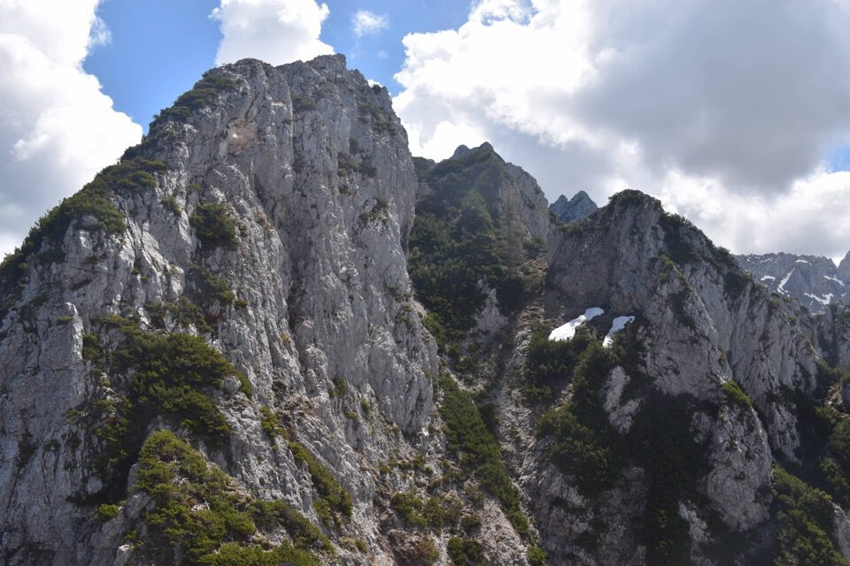

Leggiamo cos'ha da dirci il Buscaini:
226. — COSTIERA DEL MONTEBELLO 1988m IGM. — Tutte le sue cime, pur esponendo a SO pareti alte fino a 1000m, non hanno interesse alpinistico poiché la loro friabilissima roccia è invasa dai mughi. Vi passano solo arditi cacciatori di camosci. Ancora oggi c'è poca precisione nella rappresentazione topografica e confusione nell'attribuzione dei toponomi e delle quote.
Partiamo da Ortigara: prima difficoltà, ovvero il parcheggio, superata.
Ecco la costiera del Montebello: terrà il tempo vero? Il giorno prima mi sono fatto cinque ore di macchina per andare sui MdS e non vedere assolutamente nulla!
Saliamo tutto il costone di bosco, che in alto diventa molto panoramico; luogo inoltre bellissimo per via dei numerosi ed enormi larici che lo popolano.
Ecco lo Schöneck con la forcelletta che dobbiamo raggiungere.
Bella idea lasciare i ramponi in macchina!
L'arrivo in forcella è difficile da dimenticare: un canale impressionante che s'inabissa in val Romana; laggiù in fondo Sella Ursic.
Saliamo intanto il Piccolo Schöneck, così da vedere meglio come salire allo Schöneck.
Cimotto a picco sulla val Romana, che pure ho visitato. L'enorme salto a piombo sulla val Romana è davvero entusiasmante.
Il mitico e aguzzo Bucher Piccolo.
Luciana e Kelen mi aspettano sul Piccolo Schöneck.
Verso l'Alpe di Rutte col rio Sciober.
Con percorso delicato per via del terreno pessimo aggiriamo lo Schöneck a Sud e poi montiamo in cima.
La continuazione della cresta verso il Breitkofel; la cima più vicina è il Gesperrter Kofel, mica tanto facile...
Verso Tarvisio.
Male e Visoka Spica: Cima Alta di val Romana.
I due Bucher.
Per curiosità, seppur con un po' di timore, scendo per la cresta Nord-Ovest a dare un occhio: abbiamo letto sul libricino di vetta che il solito Norman è salito dalla cresta Nord, siamo stuzzicati dall'idea di scendere da lì. Una veloce consultazione delle carte al 5000 ci fa ben sperare. Eh, quasi quasi...
La bellissima Alpe di Rutte ai piedi delle Cinque Punte, luogo ameno da cui proprio una settimana fa ho osservato nuovamente lo Schöneck: lo scorso anno l'avevo osservato dalla Terza Punta e dallo Sciober, ma questa volta non ho potuto resistere...
Ma dove andate?

Scendiamo un pezzetto per la stretta e vertiginosa cresta Nord-Ovest per poi agguantare la mugosa cresta Nord.
Epperò troviamo un bel salto, per via di uno strettissimo intaglio (q1750.5 CTR). Mi sposto ad Est ma non c'è assolutamente modo di scendere sul cocuzzolo che si vede in foto: peccato perché poi sarebbe subito fatta.
Ma con una cengetta ci congiungiamo al canale poco sotto la forcelletta fra Schöneck e Piccolo Schöneck. È una via più semplice rispetto a quella che abbiamo percorso in salita.
Tornati giù io e Luciana andiamo a curiosare salendo la cresta Nord fino all'intaglio finché possibile per vedere se c'è qualche modo di aggirare il salto: no, non c'è, non si passa proprio.
Qualcuno ha effettuato tagli lungo il percorso, convinto che la cresta Nord l'avrebbe condotto in cima; accortosi però che la cosa non è fattibile, ha lasciato un barattolo di vetta (!), che non sono riuscito ad aprire. Mah...
Aggiunta: impossibile passare? Ben per noi, ma non per il fortissimo Norman che è sceso all'intaglio ed è riuscito a salire il salto, lungo una paretina di 20m di II+ con roccia che resta in mano. Eh...
Il Gesperrter Kofel: roba tosta.
Che bellezza il tarvisiano: devo frequentarlo di più.